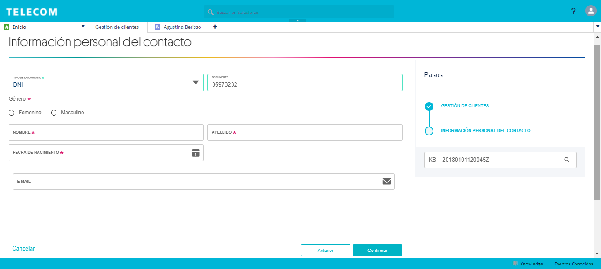
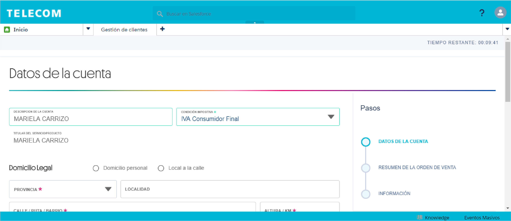

Campos a completar para crear un contacto:
Si el Contacto demuestra interés de compra se valida su identidad y se crea como nuevo Cliente completando los datos solicitados por el CRM (domicilio, condición impositiva, etc.)
Contacto ≠ cliente
Contacto no es lo mismo que Cliente: el Contacto no necesita validación y se crea al comenzar una gestión en caso de que la persona no exista en el sistema.
Luego de crear el Contacto se selecciona el producto, se valida y se crea como Cliente.
La creación de un Contacto es importante ya que Salesforce lo almacena como un potencial cliente, más allá de que no se concrete una venta en ese momento. Además, la recopilación de estos datos son útiles para crear campañas o promociones a medida que se le puedan ofrecer en un futuro.